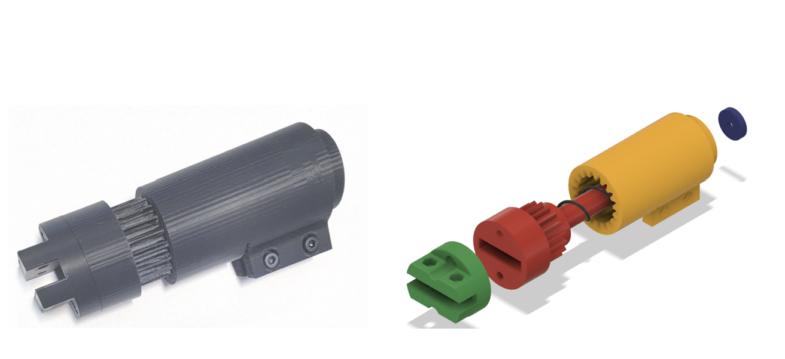
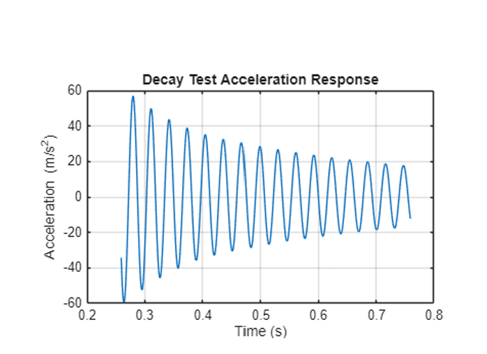
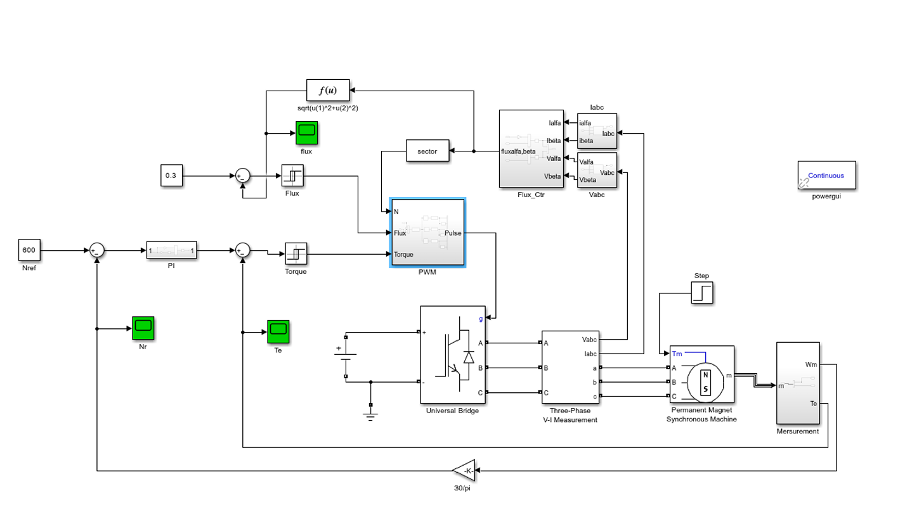
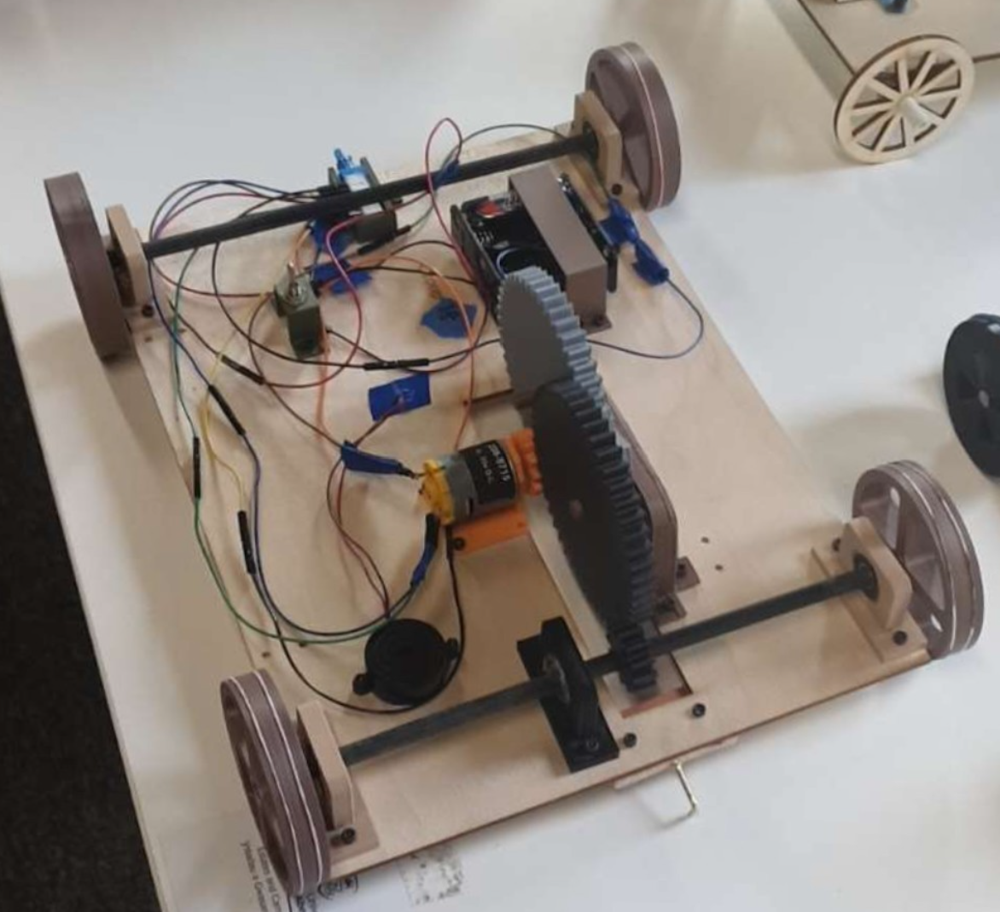
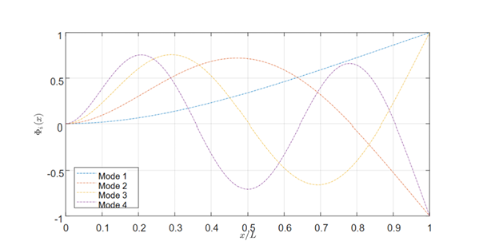
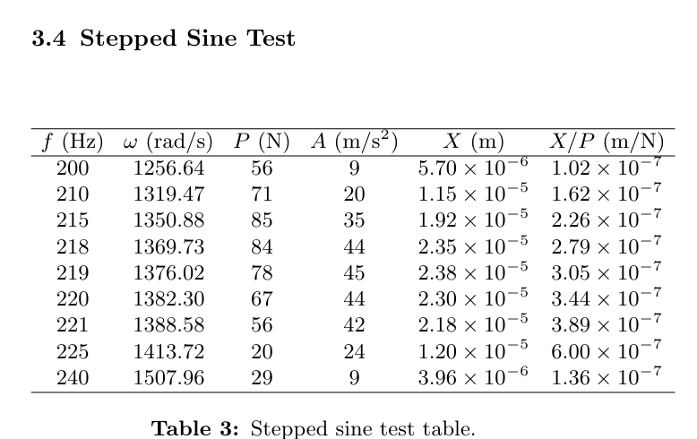
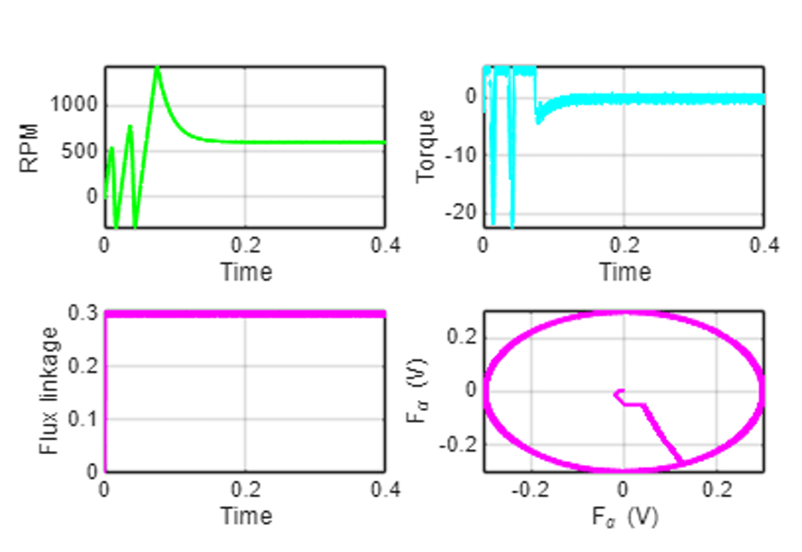

BEng Mechanical Engineering student graduating in 2027, currently on track for First-Class Honours. Interested in mechanical design, simulation, manufacturing and hands-on engineering development.
I am a Mechanical Engineering student at Swansea University with a strong interest in mechanical design, engineering simulation and manufacturing. I particularly enjoy projects that involve taking an engineering problem from initial concept through analysis, prototyping and physical testing.
Through my degree I have developed experience using Autodesk Fusion 360, MATLAB, Simulink, finite element analysis, mechanical testing and prototyping across a range of individual and team engineering projects.

Designed and developed an adjustable mechanical locking mechanism for a wheelchair-mounted assistive device. The design was developed through calculations, CAD modelling, iterative prototyping, FMEA, simulation and physical testing.
View Project
Investigated the dynamic response of a cantilever beam using experimental and theoretical methods, analysing accelerometer and force-transducer data to determine natural frequencies and damping behaviour.
View Project
Modelled AC and DC electrical systems using MATLAB and Simulink and investigated a Permanent Magnet Synchronous Motor using Direct Torque Control, analysing torque, speed, flux and transient behaviour.
View Project
Worked as part of an engineering team to design, manufacture and test a mechanical device for the IMechE Design Challenge, developing the design through iterative testing and practical engineering decisions.
View ProjectThis individual project involved developing the mechanical locking and adjustment mechanism for a wheelchair-mounted assistive device. A focused product design specification was created covering structural, usability and manufacturing requirements.
Several design concepts were assessed before progressing the selected clamp and gear locking mechanism into CAD and prototype development. FMEA was used to identify failure risks including gear slip, clamp movement and axle loading, which informed subsequent design changes.
The final mechanism was validated using Autodesk Fusion simulations under the specified 140 N design load alongside physical testing of the operating force and prototype function.
Experimental vibration testing was carried out on a cantilever beam using accelerometer and force-transducer measurements. MATLAB and LabVIEW were used to analyse the dynamic response of the system.
The investigation included decay testing, broadband excitation and stepped-sine testing. Experimental results were used to identify natural frequencies, damping characteristics and vibration mode behaviour.


MATLAB and Simulink were used to model and analyse AC and DC electrical circuits, allowing numerical calculations to be compared directly with simulated system behaviour.
A Permanent Magnet Synchronous Motor was also modelled using Direct Torque Control. The effect of parameter changes on system performance was assessed through speed, torque, flux linkage, overshoot and settling behaviour.

This team engineering project involved the design, manufacture and testing of a mechanical device for the IMechE Design Challenge.
The project required practical design development, CAD, component selection, manufacturing and iterative testing to improve the reliability and performance of the final device.